SHARKS
| Photo |
Name |
Number |
Position |
Shot |
Height |
Weight |
Birthday |
Hometown |
 |
Logan Couture |
39 |
C |
L |
6' 1" |
200 |
Mar 28, 1989 |
Guelph, ON, CAN |
| 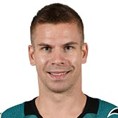 |
Joonas Donskoi |
27 |
RW |
R |
6' 0" |
190 |
Apr 13, 1992 |
Raahe, FIN |
| 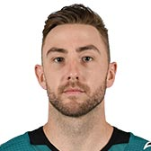 |
Barclay Goodrow |
23 |
RW |
L |
6' 2" |
215 |
Feb 26, 1993 |
Toronto, ON, CAN |
| 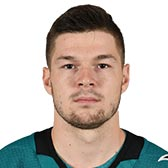 |
Tomas Hertl |
48 |
C |
L |
6' 2" |
215 |
Nov 12, 1993 |
Praha, CZE |
| 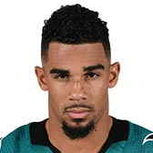 |
Evander Kane |
9 |
LW |
L |
6' 2" |
210 |
Aug 2, 1991 |
Vancouver, BC, CAN |
| 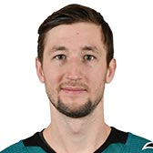 |
Melker Karlsson |
68 |
C |
R |
6' 0" |
180 |
Jul 18, 1990 |
Lycksele, SWE |
| 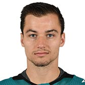 |
Kevin Labanc |
62 |
RW |
R |
5' 11" |
185 |
Dec 12, 1995 |
Brooklyn, NY, USA |
|
Timo Meier |
28 |
RW |
L |
6' 0" |
210 |
Oct 8, 1996 |
Herisau, CHE |
|
Joe Pavelski |
8 |
C |
R |
5' 11" |
190 |
Jul 11, 1984 |
Plover, WI, USA |
| 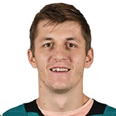 |
Lukas Radil |
52 |
C |
R |
6' 4" |
200 |
Aug 05, 1990 |
Caslav, CZE |
| 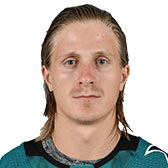 |
Marcus Sorensen |
20 |
LW |
L |
5' 11" |
175 |
Apr 7, 1992 |
Sodertalje, SWE |
|
Joe Thornton |
19 |
C |
L |
6' 4" |
220 |
Jul 2, 1979 |
London, ON, CAN |
| Photo |
Name |
Number |
Shot |
Height |
Weight |
Birthday |
Hometown |
| 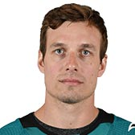 |
Justin Braun |
61 |
R |
6' 2" |
205 |
Feb 10, 1987 |
Minneapolis, MN, USA |
| 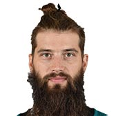 |
Brent Burns |
88 |
R |
6' 5" |
230 |
Mar 9, 1985 |
Barrie, ON, CAN |
| 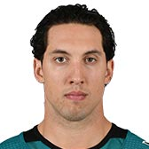 |
Brenden Dillon |
4 |
L |
6' 4" |
225 |
Nov 13, 1990 |
New Westminster, BC, CAN |
| 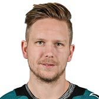 |
Tim Heed |
72 |
R |
5' 11" |
180 |
Jan 27, 1991 |
Gothenburg, SWE |
|
Erik Karlsson |
65 |
R |
6' 0" |
190 |
May 31, 1990 |
Landsbro, SWE |
| 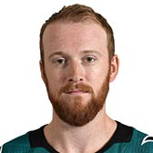 |
Joakim Ryan |
47 |
L |
5' 11" |
185 |
Jun 17, 1993 |
Rumson, NJ, USA |
| 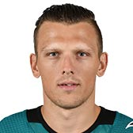 |
Radim Simek |
51 |
L |
5' 11" |
200 |
Sep 20, 1992 |
Mlada Boleslav, CZE |
| 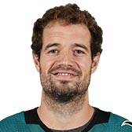 |
Marc-Edouard Vlasic |
44 |
L |
6' 1" |
205 |
Mar 30, 1987 |
Montreal, QC, CAN |
| Photo |
Name |
Number |
Height |
Weight |
Birthday |
Hometown |
|
Aaron Dell |
30 |
6' 0" |
205 |
May 4, 1989 |
Airdrie, AB, CAN |
| 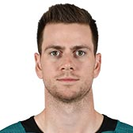 |
Martin Jones |
31 |
6' 4" |
190 |
Jan 10, 1990 |
North Vancouver, BC, CAN |